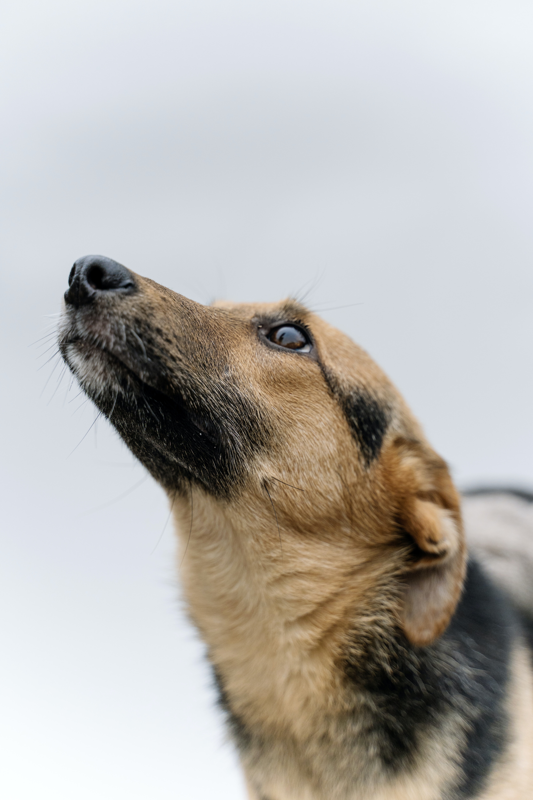

Acerca de Pawchontli
Pawchontli es una aplicación web que funge como el enlace entre los albergues que tengan mascotas para adoptar y las personas que deseen adoptar una mascota. Nos dimos a la tarea de investigar los diferentes procesos que hay para la adopción de una mascota, mediante un albergue de mascotas. Y fue ahí cuando detectamos el problema, los albergues que se dedican al rescate de animales la mayoría de las veces no tienen el alcance para llegar a muchas personas, ya sea porque no tienen sitios web, no tienen tiempo para crear publicidad o no tienen los recursos. Y las personas que buscan adoptar una mascota no tienen el conocimiento de cuántas asociaciones hay en la ciudad que viven y por falta de información no acuden a realizar la adopción. A través de la historia, las mascotas han sido grandes compañeras de la vida de las personas, compartiendo alegrías, pero también ayudando a superar momentos difíciles. Adoptar es un gran paso. Por eso queremos ayudarte para que ésta sea una de las mejores experiencias en tu vida y la de tu próximo amigo de cuatro patas.
